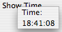

Popup Events
There are several events related to popups and menus.
An overview of these is listed below:
| contextmenu | This event is fired when a request is made to open a context menu, whether by the keyboard or mouse. This event will be fired even for elements that don't have a context menu associated with them. For more information about how to use this event, see Context Menu Events. |
| popupshowing | This event is fired on a menupopup, panel or tooltip just before it is made visible. This event is most commonly used to add or adjust items on the popup based on the context. |
| popupshown | This event is fired on a menupopup, panel or tooltip once it is visible on screen. |
|
popuphiding |
This event is fired on a menupopup, panel or tooltip once it is about to be hidden. This may happen because the user selected an item from the menu, or it may be because the popup was closed by clicking elsewhere. |
| popuphidden | This event is fired on a menupopup, panel or tooltip once it has been hidden. |
The popupshowing event
Just before a popup is about to be displayed, a popupshowing event will fired on the popup. This will occur regardless of how the popup is opened, either from user interaction or from a script calling the openPopup or openPopupAtScreen methods. The typical usage of a listener of the popupshowing event is to adjust the content of the popup based on context. For instance, right clicking on an image might display items on a context menu pertaining to images, whereas clicking on a link would display only those items pertaining to links. Within the listener for the popupshowing event, you can append to or modify the menu as needed before it is displayed. For examples of the use of the popupshowing event when used with context menus, see Hiding and Showing Menu Items based on Context.
However, this technique can be applied to any type of popup. In this example, a label within a panel is initialized with the current time.
<panel id="time-panel" onpopupshowing="this.lastChild.value = (new Date()).toLocaleFormat('%T')">
<label value="Time:"/>
<label id="time"/>
</panel>
<toolbarbutton label="Show Time" popup="time-panel"/>

You can prevent a menu or popup from appearing by calling the preventDefault method of the event from within a popupshowing listener. The default operation of the popupshowing event is to continue showing the popup. The preventDefault method will stop this from happening and the popup will not be opened.
<menu label="Edit">
<menupopup onpopupshowing="if (gDisallowed) event.preventDefault();">
<menuitem label="Undo"/>
<menuitem label="Redo"/>
</menupopup>
</menu>
In this example, a global variable gDisallowed is checked and the preventDefault method is called. If you want to prevent a context menu from opening it is better to call preventDefault with a handler for the contextmenu event instead, to avoid the extra steps necessary to fire the popupshowing event if it isn't needed.
When using nested submenus, make sure to check in the popupshowing event that the event corresponds to the right popup. This is because the popup events bubble so the parent menu will receieve a popupshowing event whenever it opens, or any submenus open. For example:
<menu label="File">
<menupopup onpopupshowing="if (event.target == this) adjustFileMenu(this);">
<menu label="Open">
<menupopup>
<menuitem label="File..."/>
<menuitem label="Page"/>
</menupopup>
</menu>
</menupopup>
</menu>
The target of the event is examined to ensure that the event is for the desired menupopup. Otherwise, the adjustFileMenu function would be called whenever the outer menupopup is opened and when the inner menupopup is opened. The bubbling of events applies to all popup events.
The popupshown event
The popupshown event is fired once a popup is already visible. When calling either the openPopup or openPopupAtScreen methods, the popup will not actually be open before that method returns. The popupshown event will be fired when the UI is updated and the popup is visible.
One possible use of the popupshown event is to open another menu. This technique, as shown in the following example, is needed if you wish to open a submenu programmatically. This is because you cannot open a submenu directly without first opening the parent menu.
<script>
function openFileMenu()
{
var filemenu = document.getElementById("file-menu");
filemenu.addEventListener("popupshown", fileMenuOpened, false);
filemenu.open = true;
}
function fileMenuOpened(event)
{
if (event.target != document.getElementById("file-menupopup"))
return;
var filemenu = document.getElementById("file-menu");
filemenu.removeEventListener("popupshown", fileMenuOpened, false);
var openmenu = document.getElementById("open-menu");
openmenu.open = true;
}
</script>
<menu id="file-menu" label="File">
<menupopup id="file-menupopup">
<menu id="open-menu" label="Open">
<menupopup>
<menuitem label="File..."/>
<menuitem label="Page"/>
</menupopup>
</menu>
</menupopup>
</menu>
<button label="Open" oncommand="openFileMenu();"/>
When the button is pressed, the openFileMenu function is called. Within this function, a popupshown event listener is attached to the 'File' menu using the addEventListener method. This will cause the fileMenuOpened function to be called when the popupshown event is fired on the 'File' menu.
The fileMenuOpened function first checks that the target of the event is the right popup and returns early if not. Next, the popupshown event listener is removed again. We need to make sure to do this to ensure that the event listener isn't added multiple times. Finally, we use a similar technique as the openFileMenu function to open the 'Open' submenu. The result is a button that opens both the outer menu and the inner menu.
The popuphiding event
When a popup is closed, the popuphiding event is fired on the popup just before it is removed from the screen. A listener for the popuphiding event can be used to remove or hide items on the popup again, the reverse of the popupshowing event. The popuphiding event is fired regardless of how the popup was hidden, whether because the user selected an item from a menu, or if the user clicked outside the popup, or if the user pressed Escape to cancel the menu. The popupshowing and popuphiding event will also be fired as the user rolls the mouse around on a menu bar, showing and hiding different menus and submenus.
In this example, the contents of a textbox are cleared whenever a popup is hidden.
<panel onpopuphiding="document.getElementById('search').value = '';">
<textbox id="search"/>
<button label="Search" oncommand="doSearch();"/>
</panel>
You can prevent a popup from hiding by calling the event's preventDefault method. This way, the popup will not be closed. Usually, you should not do this. If you wanted to ensure that a value was entered for instance, it is much better to rework the UI such that the code can handle no value being entered instead. Otherwise, the user will be distracted with a popup that they cannot close.
You also cannot cancel the hiding of a menupopup when a user has made a selection from a menu, as it is already too late to do so. In this situation the command event has already been sent to the selected menuitem and the operation already carried out. This is one special case in which the popuphiding event is fired after the popup has been removed from the screen. The reason for this is if, as is quite common, the menu item's action is to open a modal dialog. Here, the menu would need to be removed first, before the dialog can be opened. Otherwise, the user would have a menu for a parent window that is no longer active. So instead, the popup is removed first. Note that this means that the popuphiding event doesn't fire until after the modal dialog has been closed.
There are situations when the popuphiding event will not fire when a menu is closed so you should make sure not to call any necessary code there. A better way is to just reinitialize the menu or popup in the popupshowing event. One such situation when the hiding events are not sent is when the menu is removed from the document. This is because there is no longer an element to send the events to. Another situation is when the document is being unloaded.
The popuphidden event
The popuphidden event is fired after a popup has been closed.
When a chain of menus is opened, that is, when a menu and at least one level of submenus is opened, first the popuphiding event will be fired on the lowest level of submenu. Then that menu will be closed and the popuphidden event will be fired. This process will then repeat for the next highest level of menu until all the menus are closed. This means that when a long chain of submenus is opened, a number of popuphiding and popuphidden events will be fired in sequence. You can tell that the entire chain is closed when the topmost menu receives a popuphidden event.